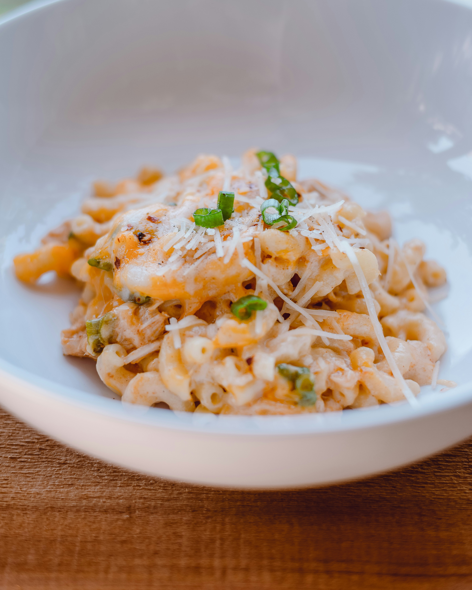

Chocolate Chip Cookie Recipe
Ingredients:
½ cup sugar
¾ cup brown sugar, packed
1 teaspoon salt
½ cup butter, melted
1 egg
1 teaspoon vanilla extract
1¼ cups all-purpose flour
½ teaspoon baking soda
4 ounces milk or semi-sweet chocolate chunks
4 ounces dark chocolate chunks (or your preference)
Preparation:
Preheat oven to 350°F/180°C.
In a large bowl, whisk together the sugars, salt, and butter until a paste has formed with no lumps.
Whisk in the egg and vanilla, beating until light ribbons fall off the whisk.
Sift in the flour and baking soda, then fold the mixture with a spatula, being careful not to overmix too much. This will cause the gluten in the flour to toughen which will result in cakier cookies.
Fold in the chocolate chunks evenly, then chill the dough for at least 30 minutes. For a more intense toffee-like flavor and deeper color, chill the dough overnight. The longer the dough rests, the more complex its flavor will be.
Scoop the dough with an ice-cream scoop onto a parchment paper-lined baking sheet, leaving at least 4 inches of space between cookies and 2 inches of space from the edges of the pan so that the cookies can spread evenly.
Bake for 12-15 minutes, or until the edges have started to barely brown.
Cool completely, and enjoy!
Link to Youtube Tutorial
Contact Me !!!
Mac and Cheese Recipe

Ingredients:
1 teaspoon kosher salt, plus more for boiling
8 oz dried pasta shells
10 oz shredded sharp cheddar cheese, divided
4 oz american cheese, cubed
2 tablespoons cornstarch
½ stick unsalted butter
1 teaspoon mustard powder
¼ teaspoon cayenne pepper
1 ½ cups whole milk
1 ½ cups heavy cream
1 large egg
2 oz shredded mozzarella cheese
2 oz shredded parmesan cheese
Preparation:
Preheat the oven to 350°F (180°C).
Bring a large pot of well-salted water to a boil. Add the pasta and cook for 2 minutes less than recommended on the package (you want the pasta to have a slight bite; it will finish cooking while it bakes), then drain.
In a large bowl, combine 8 ounces of shredded cheddar cheese with the American cheese and cornstarch. Use your fingers to gently toss until all of the cheese is coated.
Melt the butter in a large pot over medium heat. As the butter begins to sizzle, add the mustard powder and cayenne and stir to combine. Toast the spices until the butter turns golden brown, about 1 minute.
Slowly whisk in the milk and heavy cream. Continue whisking until the milk begins to simmer with small bubbles rapidly rising to the surface, about 3 minutes.
Whisk the egg in a small bowl, then temper it by slowly adding a few spoonfuls of the simmering milk mixture while continuing to whisk until incorporated.
Slowly drizzle the tempered egg back into the milk mixture, whisking vigorously until the egg is fully incorporated.
Remove the pot from the heat and add the cheddar cheese mixture, a small handful at a time, whisking between each addition to make sure the cheese melts evenly (mix quickly enough that the mixture does not cool too rapidly, but slowly enough that the emulsion does not break).
Add the cooked pasta to the pot and gently fold to coat with the sauce, then season with 1 teaspoon of salt. Pour the pasta and sauce into an 8-inch square baking dish with 2-inch-high sides (at this point, the pasta can be wrapped and refrigerated for up to 3 days).
In a medium bowl, combine the remaining 2 ounces of cheddar cheese, the mozzarella cheese, and Parmesan cheese. Sprinkle on top of the pasta.
Bake the mac and cheese until the cheese is melted and beginning to bubble around the edges, about 20 minutes. Turn the broiler on high and broil the mac and cheese until the cheese begins to brown all over, about 5 minutes. Let the mac and cheese sit for 5 minutes for the sauce set and cool slightly.
Serve warm.
Enjoy!
Link to Youtube Tutorial
Contact Me !!!